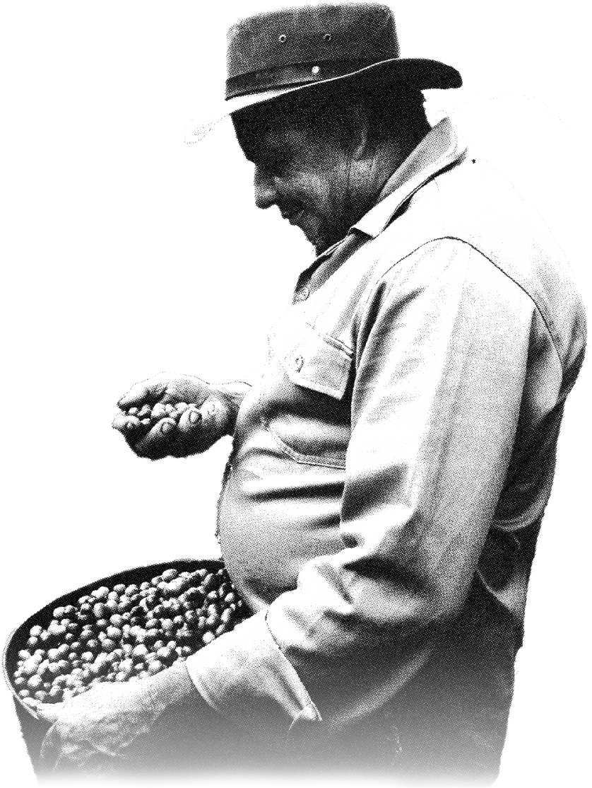
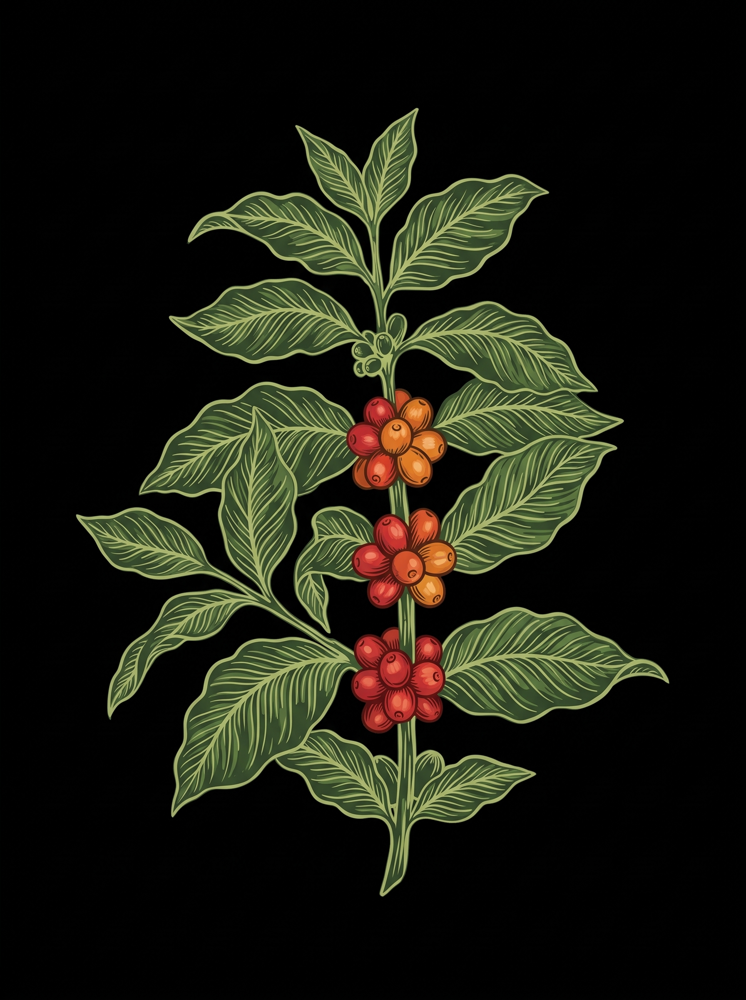
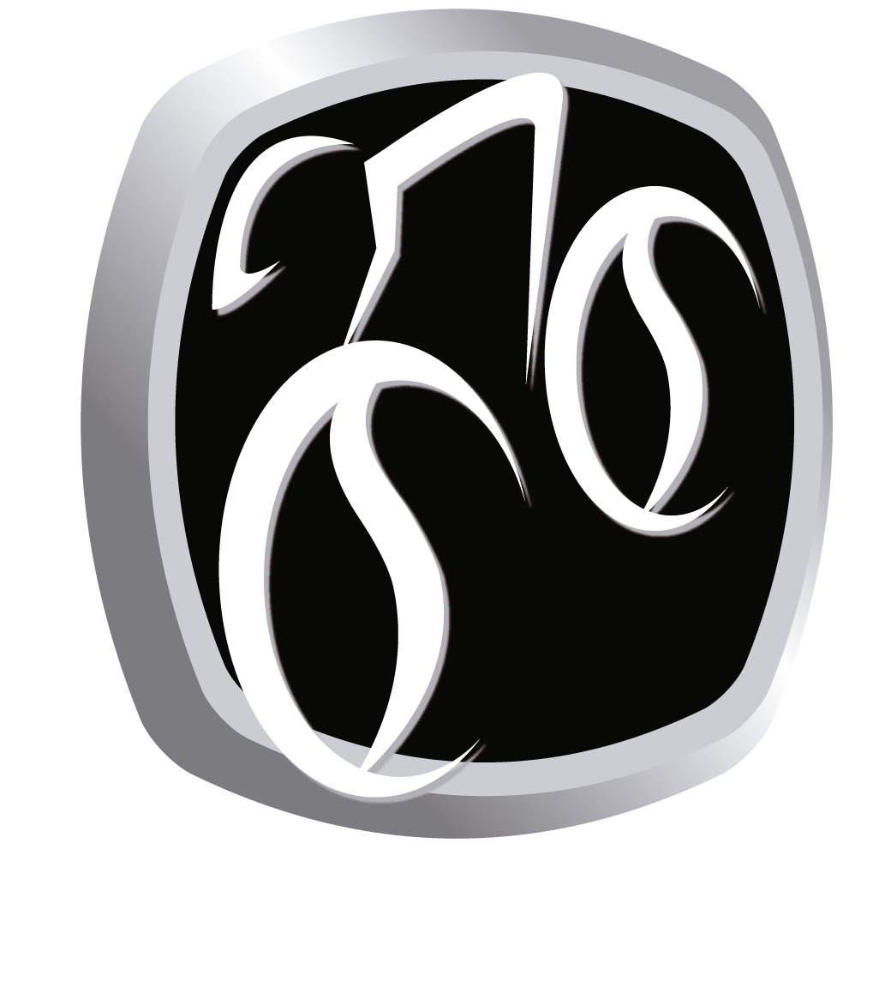

Legado en Movimiento
Un ecosistema circular donde la tradición cafetera de nuestras familias y el ciclismo nacional se unen para transformar vidas y construir un futuro sostenible. Para que tu apoyo sea sostenible, se ha diseñado un modelo en donde tu participación en el Tour del Café, las compras de café y productos Mítico co-financiarán el desarrollo de dos programas:
Legado en Movimiento
Apoyo al Ciclismo en etapa de Formación y Desarrollo.
El Manifiesto del "Legado en Movimiento" es la declaración de un ecosistema circular donde la tradición cafetera y la ambición deportiva se unen para profesionalizar el ciclismo en Colombia. Este propósito se fundamenta en la creencia de que la historia de nuestro país ha sido escrita con la misma pasión por agricultores resilientes y ciclistas legendarios en nuestras montañas.

ProView Cycling
5% Infraestructura física y digitalSu misión es "hacer visible lo invisible", proporcionando:
- Un Race Data Center para que los eventos tengan mayor visibilidad digital y analítica para que el talento joven sea visto por scouts y medios internacionales.
- A través de The Cycling Company (El Operador), mejorar la infraestructura de las carreras del calendario nacional para que mejoren su visibilidad.

Sentimiento Cafetero
5% Apoyo directo y académicoEste pilar se encarga de:
- Otorgar apoyo a través de un protocolo de selección y seguimiento pre establecido, a jóvenes ciclistas en etapa de formación y desarrollo.
- Co-financiar y gestionar la actualización académica de entrenadores, sobre todo en los municipios más alejados, asegurando que el talento nacional esté respaldado por conocimiento técnico y científico.
Ride to the Origins
Apoyo a las Familias Cafeteras.
La plataforma integra una estrategia cafetera liderada por Mítico Cycling Coffee y su partner A Coffee Family, estructurando un modelo de negocio que visibiliza y conecta a más de 50 familias pequeñas productoras con los mercados de especialidad. Asimismo, a través de la iniciativa “Resiliencia Cafetera” del Tour del Café, ruedas por el Eje Cafetero y por su gente apoyando la reconstrucción del hogar de quienes cultivan el café que te impulsa.
El despliégue operativo durante los eventos del Tour del Café maximiza la monetización y la visibilidad a través de tres niveles:
Capturado en las activaciones, Fan Zones y Expos mediante barras de experiencia interactiva y la venta directa de packs de café tostado y merch por Mítico.
Centralizado en el Coffee Roaster´s Lounge de A Coffee Family para facilitar ruedas de negocios, cataciones y venta de café en volumen a tostadores e importadores internacionales.
Mediante herramientas de trazabilidad como experiencias cafeteras, "Pasaportes de Origen", códigos QR y merch.
Pedalea por la Tierra del Café
El Eje Cafetero no es solo el escenario de ensueño donde rodaremos en febrero de 2027; es el hogar de cientos de familias que dedican su vida a cultivar el mejor café del mundo. Tras el sismo que sacudió nuestra región el pasado 10 de agosto, muchas de estas familias —el corazón de nuestro ecosistema— sufrieron pérdidas materiales incalculables en sus hogares y fincas productivas.
"Tu participación reconstruye el hogar de quienes cultivan el café que te impulsa. Rueda por el Quindío, rueda por su gente."
Nuestra pasión por la bicicleta cobra un propósito mayor. A través de la iniciativa Resiliencia cafetera, en alianza con A Coffee Family, tu participación se convertirá en techos reconstruidos, beneficiaderos recuperados y esperanza renovada para nuestros caficultores.
¿Cómo tu participación transforma vidas?
Cuando te sumas al Tour del Café Gran Fondo, tu pedalazo impacta directamente en el origen de tres maneras:
Tu inscripción ya está reconstruyendo
Al registrarte, un porcentaje directo de tu inscripción se destina automáticamente al fondo Ride to the Origins. No es solo un número de carrera: es un aporte tangible para devolver la estabilidad a las familias cafeteras más afectadas por la emergencia.
Adquiere Merch y Café Mítico Resiliencia (Edición Exclusiva)
Lleva contigo un pedazo de nuestra tierra y apoya directamente a quienes la cuidan:
- Micro-lotes Conmemorativos «Ride to the Origins»: Cafés de especialidad seleccionados junto a A Coffee Family, cultivados en las fincas de las familias beneficiarias. El 100% de las utilidades netas va directamente a la recuperación de su infraestructura productiva.
- Apparel & Accesorios Oficiales: Gorras de ciclismo (cycling caps), calcetines, tazas esmaltadas y prendas de edición limitada disponibles en preventa y en la Expo del festival. Cada compra suma ladrillo a ladrillo.
Súmate con el «Dorsal Solidario»
Si deseas amplificar tu impacto, durante tu proceso de inscripción puedes añadir una donación voluntaria al fondo de reconstrucción. Como agradecimiento, tu número de competencia llevará el distintivo exclusivo Ride to the Origins y tendrás acceso a experiencias conmemorativas dentro del festival.
Familias Beneficiadas & Fincas Cafeteras
Pasa el cursor sobre la información de una familia para ver su ubicación real en el mapa lineal de Colombia, o interactúa directamente con los puntos del mapa.
Próximamente
Estamos realizando el registro de las familias afectadas.
Próximamente
Estamos realizando el registro de las familias afectadas.
Próximamente
Estamos realizando el registro de las familias afectadas.
Mapa de Trazabilidad
Compromiso y Trazabilidad Total
Cada peso recaudado será gestionado y ejecutado en el terreno de la mano de A
Coffee
Family, priorizando necesidades críticas de vivienda y recuperación
productiva
de las familias caficultoras. A través de nuestros canales oficiales y boletines, podrás
seguir de cerca cómo tu aporte se convierte en obras reales antes, durante y después del
evento.
Inscríbete hoy. Rueda con el corazón. Seamos el motor que levanta a nuestras
familias cafeteras.